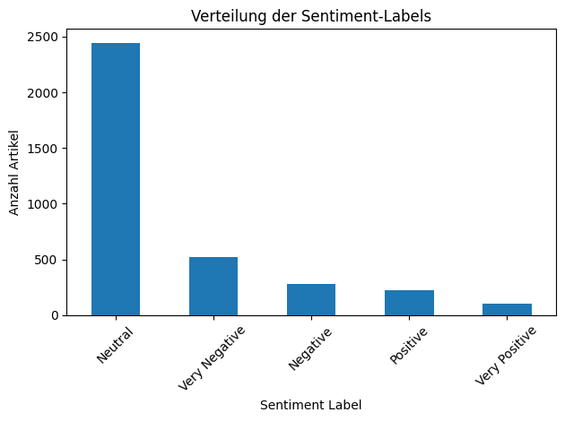
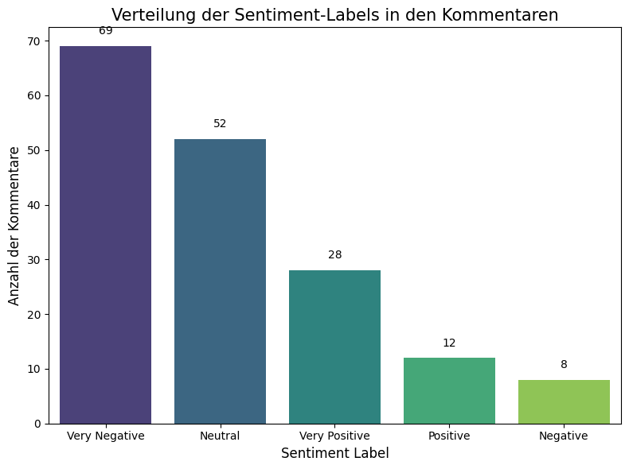
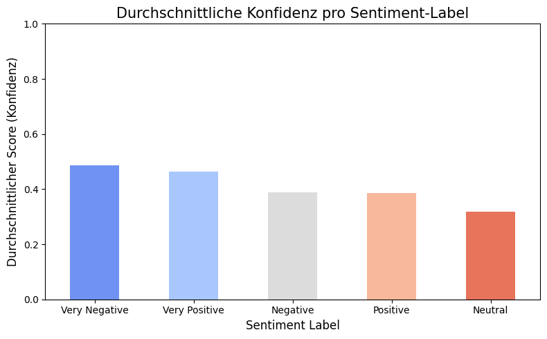

1. Einleitung: Von der Theorie zur Praxis des Webscrapings
In den vorherigen Sitzungen haben wir die Grundlagen der Datenbeschaffung, insbesondere APIs und Web Scraping, sowie automatisierte Analysemethoden kennengelernt. Heute wollen wir tiefer in die Materie des Web Scrapings eintauchen, uns mit den wichtigen rechtlichen Rahmenbedingungen in Deutschland auseinandersetzen und einen Ausblick auf fortgeschrittenere Techniken wie die Browser-Automatisierung werfen.
Die Fähigkeit, Daten eigenständig aus dem Web zu extrahieren, ist für Forschende im Bereich der politischen Online-Kommunikation von unschätzbarem Wert, da sie den Zugang zu aktuellen und spezifischen Informationen ermöglicht, die über offizielle Schnittstellen oft nicht oder nur eingeschränkt verfügbar sind. Gleichzeitig erfordert dies ein hohes Maß an technischem Verständnis, ethischer Reflexion und rechtlichem Bewusstsein.
Agenda der heutigen Sitzung:
- Rechtliche Aspekte des Web Scrapings in Deutschland: Fokus auf § 60d Urheberrechtsgesetz (Text und Data Mining für wissenschaftliche Forschung).
- Praktische Anwendung (Headless Scraping): Extraktion von Artikel-Metadaten von Genios.de und anschließende Sentiment-Analyse mit Google Colab.
- Einführung in Browser Automation mit Selenium: Konzept, Anwendungsfälle (z.B. TikTok) und grundlegende Schritte zur lokalen Einrichtung.
- Diskussion von Herausforderungen und Best Practices.
2. Rechtliche Rahmenbedingungen: Web Scraping & das Urheberrecht (§ 60d UrhG)
Bevor wir uns erneut der Praxis zuwenden, ist ein genauerer Blick auf die rechtliche Situation des Web Scrapings für Forschungszwecke in Deutschland unerlässlich. Eine zentrale Norm ist hierbei § 60d des Urheberrechtsgesetzes (UrhG), der das Text und Data Mining (TDM) für Zwecke der wissenschaftlichen Forschung regelt.
Die Regelung des § 60d UrhG, die auf der europäischen DSM-Richtlinie (Digital Single Market) basiert, schafft eine wichtige gesetzliche Erlaubnis (Schrankenregelung) für Forschende. Dies bedeutet:
- Berechtigung für Forschende: Einzelne Forscher, die "nicht kommerzielle Zwecke" verfolgen (§ 60d Abs. 3 Nr. 2 UrhG), und Forschungsorganisationen (§ 60d Abs. 2 UrhG) sind grundsätzlich berechtigt, Vervielfältigungen von rechtmäßig zugänglichen Werken für TDM zu Zwecken der wissenschaftlichen Forschung vorzunehmen.
- Kein Zustimmungserfordernis: Diese Erlaubnis besteht unabhängig von der Zustimmung des Rechteinhabers. Vertragliche Vereinbarungen (z.B. in Allgemeinen Geschäftsbedingungen - AGB), die TDM für wissenschaftliche Forschung einschränken oder verbieten, sind gemäß § 60h UrhG i.V.m. Art. 7 DSM-RL in der Regel unwirksam.
- "Rechtmäßiger Zugang": Eine wesentliche Voraussetzung ist, dass der Zugang zu den Werken rechtmäßig ist (z.B. öffentlich frei zugängliche Webseiten, Inhalte hinter einer Paywall, für die eine Lizenz/ein Abo besteht).
- Umfang der Vervielfältigung: Das Gesetz erlaubt "Vervielfältigungen", was das Herunterladen und Speichern von Daten für das TDM-Verfahren einschließt. Eine explizite mengenmäßige Beschränkung gibt es nicht, solange es für die "wissenschaftliche Forschung" erforderlich ist.
Die Grenzen und die Position der Anbieter:
Trotz dieser gesetzlichen Erlaubnis gibt es wichtige Einschränkungen und Aspekte, die Anbieter von Online-Inhalten oft betonen:
- § 60d Abs. 6 UrhG – Schutz der Systemintegrität: Rechteinhaber dürfen "erforderliche Maßnahmen" ergreifen, um zu verhindern, dass die "Sicherheit und Integrität ihrer Netze und Datenbanken" durch die TDM-Vervielfältigungen gefährdet werden. Darauf berufen sich Anbieter oft, wenn sie "Massendownloads" in ihren AGB untersagen oder technische Schutzmaßnahmen implementieren. Die Frage ist, was "erforderlich" ist und wann die Integrität tatsächlich gefährdet ist. Ein rücksichtsvolles, langsames Scraping durch einen einzelnen Forscher stellt i.d.R. eine geringere Gefahr dar als aggressive Bot-Netzwerke.
- § 44b UrhG – Allgemeiner Vorbehalt für TDM: Dieser Paragraph regelt TDM für jegliche Zwecke (auch kommerzielle). Hier können Rechteinhaber einen Nutzungsvorbehalt erklären (z.B. in `robots.txt`). Wichtig: Dieser Vorbehalt nach § 44b Abs. 3 UrhG gilt gemäß § 44b Abs. 4 Nr. 1 UrhG explizit nicht für das wissenschaftliche TDM nach § 60d UrhG. § 60d ist die speziellere und zwingende Regelung für die Forschung.
- Technische Schutzmaßnahmen (TPM) und deren Umgehung (§ 95a UrhG): Wenn Anbieter wirksame technische Maßnahmen (z.B. IP-Sperren, Captchas, komplexe Ratenbegrenzungen) einsetzen, um Zugriffe zu steuern oder (aus ihrer Sicht) unzulässige Nutzungen zu verhindern, kann die aktive Umgehung dieser Maßnahmen einen Verstoß gegen § 95a UrhG darstellen. Viele AGB verbieten dies explizit.
- AGB und `robots.txt`:
- `robots.txt` ist primär eine Richtlinie für Webcrawler und nicht per se rechtlich bindend im Sinne eines Gesetzesverstoßes für Forschende unter § 60d UrhG. Es signalisiert jedoch den Willen des Betreibers.
- AGB sind Verträge. Klauseln, die § 60d UrhG direkt widersprechen (z.B. ein generelles Verbot von TDM für Forschung), sind unwirksam. Klauseln, die sich auf den Schutz der Systemintegrität (§ 60d Abs. 6 UrhG) oder das Verbot der Umgehung von TPMs stützen, haben eine stärkere rechtliche Basis.
Gesetzestext: § 60d UrhG – Text und Data Mining für Zwecke der wissenschaftlichen Forschung
(Auszug, vollständiger Text hier)
(1) Vervielfältigungen für Text und Data Mining (§ 44b Absatz 1 und 2 Satz 1) sind für Zwecke der wissenschaftlichen Forschung nach Maßgabe der nachfolgenden Bestimmungen zulässig.
(2) Zu Vervielfältigungen berechtigt sind Forschungsorganisationen. Forschungsorganisationen sind Hochschulen, Forschungsinstitute oder sonstige Einrichtungen, die wissenschaftliche Forschung betreiben, sofern sie 1. nicht kommerzielle Zwecke verfolgen, 2. sämtliche Gewinne in die wissenschaftliche Forschung reinvestieren oder 3. im Rahmen eines staatlich anerkannten Auftrags im öffentlichen Interesse tätig sind. Nicht nach Satz 1 berechtigt sind Forschungsorganisationen, die mit einem privaten Unternehmen zusammenarbeiten, das einen bestimmenden Einfluss auf die Forschungsorganisation und einen bevorzugten Zugang zu den Ergebnissen der wissenschaftlichen Forschung hat.
(3) Zu Vervielfältigungen berechtigt sind ferner 1. Bibliotheken und Museen, sofern sie öffentlich zugänglich sind, sowie Archive und Einrichtungen im Bereich des Film- oder Tonerbes (Kulturerbe-Einrichtungen), 2. einzelne Forscher, sofern sie nicht kommerzielle Zwecke verfolgen.
(4) Berechtigte nach den Absätzen 2 und 3, die nicht kommerzielle Zwecke verfolgen, dürfen Vervielfältigungen nach Absatz 1 folgenden Personen öffentlich zugänglich machen: 1. einem bestimmt abgegrenzten Kreis von Personen für deren gemeinsame wissenschaftliche Forschung sowie 2. einzelnen Dritten zur Überprüfung der Qualität wissenschaftlicher Forschung. Sobald die gemeinsame wissenschaftliche Forschung oder die Überprüfung der Qualität wissenschaftlicher Forschung abgeschlossen ist, ist die öffentliche Zugänglichmachung zu beenden.
(5) Berechtigte nach den Absätzen 2 und 3 Nummer 1 dürfen Vervielfältigungen nach Absatz 1 mit angemessenen Sicherheitsvorkehrungen gegen unbefugte Benutzung aufbewahren, solange sie für Zwecke der wissenschaftlichen Forschung oder zur Überprüfung wissenschaftlicher Erkenntnisse erforderlich sind.
(6) Rechtsinhaber sind befugt, erforderliche Maßnahmen zu ergreifen, um zu verhindern, dass die Sicherheit und Integrität ihrer Netze und Datenbanken durch Vervielfältigungen nach Absatz 1 gefährdet werden.
Interpretation und Empfehlungen für Forschende:
Aus § 60d UrhG und der Diskussion ergibt sich für die wissenschaftliche Forschung:
- Grundlegende Erlaubnis: Für nicht-kommerzielle wissenschaftliche Forschung ist TDM (und damit das dafür notwendige Scraping) von rechtmäßig zugänglichen Quellen erlaubt.
- `robots.txt` und Forschung: Die `Disallow`-Anweisungen in einer `robots.txt` haben für wissenschaftliches TDM unter § 60d UrhG in der Regel keine sperrende Wirkung.
- Vorsicht und "Nettigkeit": Es ist unbedingt erforderlich, Server nicht zu überlasten. Implementieren Sie immer angemessene Pausen (
time.sleep()) zwischen Anfragen. Ein Verstoß hiergegen könnte als Gefährdung der Systemintegrität (§ 60d Abs. 6 UrhG) gewertet werden. - Keine Umgehung von TPMs: Vermeiden Sie die aktive Umgehung von technischen Schutzmaßnahmen wie Captchas oder komplexen Anmeldeprozessen, die spezifisch das automatisierte Abrufen verhindern sollen. Dies könnte § 95a UrhG berühren. Einfache Ratenbegrenzungen durch den Server, die man durch Pausen respektiert, sind hiervon abzugrenzen.
- Paywalls und Login-Bereiche: Wenn Sie rechtmäßigen Zugang zu Inhalten hinter einer Paywall haben (z.B. durch eine Universitätslizenz wie bei WISO für Genios-Artikel), ist TDM prinzipiell auch hier nach § 60d UrhG erlaubt. Aber: Seien Sie hier besonders vorsichtig. Anbieter überwachen Zugriffe oft genau. Exzessives Scraping kann zur Sperrung des institutionellen oder persönlichen Zugangs führen, da Anbieter sich (auch über AGB) gegen als missbräuchlich empfundene Nutzung (auch wenn rechtlich unter §60d UrhG gedeckt) zur Wehr setzen, um ihre Systeme und Geschäftsmodelle zu schützen. Die Abwägung zwischen Forschungsinteresse und Risiko einer Zugangssperre ist hier zentral.
- Zweckbindung: Die gesammelten Daten dürfen nur für die wissenschaftliche Forschung und ggf. zur Überprüfung der Ergebnisse genutzt werden. Jede kommerzielle Nutzung ist ausgeschlossen.
- Dokumentation: Dokumentieren Sie Ihr Vorgehen (Quellen, Zeitraum, verwendete Skripte/Parameter) transparent.
Fazit: § 60d UrhG stärkt die Position der Forschung erheblich. Dennoch ist ein verantwortungsvoller, technisch umsichtiger und ethisch reflektierter Umgang mit Web Scraping unerlässlich, um Konflikte mit Anbietern und rechtliche Probleme zu vermeiden.
3. Praktische Anwendung: Scraping von Genios.de und Sentiment-Analyse
Genios ist eine umfangreiche Datenbank, die unter anderem Artikel aus vielen deutschen Zeitungen und Zeitschriften aggregiert. Über die WISO-Datenbank haben viele Universitäten Zugang zu diesen Inhalten. Für Forschungszwecke können wir – unter Beachtung der oben genannten rechtlichen Aspekte – Artikelmetadaten (Titel, Snippets, Erscheinungsdatum etc.) für spezifische Suchbegriffe über die öffentliche Genios-Webseite (nicht den WISO-Login) scrapen.
Beispielhaftes Ergebnis einer Sentiment-Verteilung (simuliert):
Diese Visualisierung zeigt, wie die gesammelten Artikel nach ihrer Tonalität (positiv, negativ, neutral) verteilt sein könnten.
4. Browser Automation mit Selenium: Jenseits von statischem HTML
Während `requests` und `BeautifulSoup` hervorragend für das Parsen von statischem HTML-Inhalt geeignet sind, stoßen sie an ihre Grenzen, wenn Webseiten Inhalte dynamisch mit JavaScript nachladen (z.B. durch Scrollen, Klicks auf "Mehr laden"-Buttons, Interaktion mit Menüs). Hier kommt Browser Automation ins Spiel.
Headless Scraping (z.B. `requests` + `BeautifulSoup`)
- ✅ Schnell und ressourcenschonend.
- ✅ Gut für serverseitig gerendertes HTML.
- ❌ Kann keine JavaScript-Interaktionen ausführen.
- ❌ Sieht oft nur den initial geladenen Inhalt.
Browser Automation (z.B. Selenium, Playwright)
- ✅ Steuert einen echten Browser fern.
- ✅ Kann mit JavaScript interagieren (klicken, scrollen, Formulare ausfüllen).
- ✅ Sieht die Webseite, wie ein Nutzer sie sieht.
- ❌ Langsamer und ressourcenintensiver.
- ❌ Komplexeres Setup.
Selenium ist ein mächtiges Werkzeug-Set zur Automatisierung von Webbrowsern. Ursprünglich für das Testen von Webanwendungen entwickelt, wird es häufig für Web Scraping eingesetzt, wenn dynamische Inhalte extrahiert werden müssen. Es erlaubt Ihnen, Aktionen wie Klicks, Eingaben in Formularfelder, Scrollen und das Ausführen von JavaScript programmatisch zu steuern und anschließend den resultierenden HTML-Code zu analysieren.
Anwendungsfall: Scraping von TikTok-Videos und Kommentaren
TikTok ist ein Paradebeispiel für eine Plattform, deren Inhalte stark dynamisch geladen werden. Insbesondere Kommentare erscheinen oft erst nach dem Scrollen oder durch zusätzliche Interaktionen. Ein einfacher requests-Ansatz würde hier nur einen Bruchteil der Daten erfassen. Mit Selenium können wir einen Browser fernsteuern, um folgende Aufgaben automatisiert durchzuführen:
- Laden einer spezifischen TikTok-Video-Seite.
- Automatisches oder manuelles Handhaben von Cookie-Bannern und CAPTCHAs.
- Simuliertes Scrollen auf der Seite, um das dynamische Nachladen von Kommentaren auszulösen.
- Extraktion von Video-Metadaten wie Autor, Beschreibung, Musik, Like-Zahlen und Veröffentlichungsdatum.
- Sammlung der geladenen Kommentare, inklusive Autor, Text, relativem Datum und (sofern verfügbar) Like-Zahlen.
- Speicherung der gesammelten Daten in einem strukturierten Format, z.B. als JSON-Datei.
Diese Methode ermöglicht eine deutlich umfassendere Datenerhebung als rein statisches Scraping, erfordert aber auch eine sorgfältige Implementierung, um mit den dynamischen Elementen der Webseite korrekt zu interagieren.
Lokales Setup und Durchführung des TikTok-Scrapings mit Selenium
Um TikTok-Daten mit Selenium zu scrapen, ist eine lokale Python-Umgebung notwendig, da ein realer Webbrowser gesteuert wird. Die folgenden Schritte skizzieren das Vorgehen und beziehen sich auf das bereitgestellte Beispielskript.
-
Python-Umgebung vorbereiten (Miniconda/Anaconda empfohlen):
Eine isolierte Python-Umgebung ist ratsam, um Abhängigkeitskonflikte zu vermeiden.
# 1. Falls noch nicht geschehen, Miniconda installieren: # https://docs.conda.io/en/latest/miniconda.html # 2. Neues Conda Environment erstellen (z.B. mit Python 3.11): conda create -n tiktok python=3.11 pip -y # 3. Environment aktivieren: conda activate tiktok -
Notwendige Python-Bibliotheken installieren:
Das Kernstück ist Selenium.
webdriver-managerhilft bei der Verwaltung des Browser-Treibers.requestswird hier nicht direkt vom TikTok-Skript benötigt, ist aber allgemein nützlich.pip install selenium webdriver-manager -
Webbrowser und WebDriver:
Selenium steuert einen Standard-Webbrowser (hier: Google Chrome). Der
webdriver-managerim Python-Skript kümmert sich in der Regel automatisch um das Herunterladen und die Konfiguration des passenden ChromeDrivers. Stellen Sie sicher, dass Google Chrome auf Ihrem System installiert ist. -
Beispielskript herunterladen und anpassen:
Ein Python-Skript, das die Extraktion von TikTok-Video-Metadaten und Kommentaren demonstriert, kann hier heruntergeladen werden. Es beinhaltet bereits Logik zum Umgang mit dynamischen Elementen und eine Pausenfunktion für manuelle Eingriffe (z.B. CAPTCHA-Lösung).
tiktok_scraper_beispiel.py herunterladen(Benennen Sie die Datei ggf. in
tiktokscraper.pyum, falls Ihr System die Endung ändert.)Passen Sie im Skript ggf. die
tiktok_video_urlund dieMANUAL_INTERVENTION_TIMEan Ihre Bedürfnisse an. -
Skript ausführen und Interaktion:
Führen Sie das Skript über Ihr Terminal oder Ihre Python-IDE aus:
python tiktokscraper.pyDas Skript wird:
- Einen Chrome-Browser öffnen und zur angegebenen TikTok-URL navigieren.
- Versuchen, Cookie-Banner automatisch zu handhaben.
- Eine Pause für manuelle Intervention einlegen. In dieser Zeit müssen Sie eventuell auftauchende CAPTCHAs lösen und sicherstellen, dass die Hauptseite des Videos geladen ist.
- Danach automatisch scrollen, um Kommentare zu laden.
- Die Daten extrahieren und als JSON-Datei speichern.
Die extrahierten Daten (Metadaten und Kommentare) werden in einer JSON-Datei im selben Verzeichnis gespeichert, z.B.
tiktok_data_VIDEOID.json.
Wichtige Hinweise zum bereitgestellten TikTok-Scraping-Skript:
- Selektoren: Das Skript verwendet CSS-Selektoren, um Elemente auf der TikTok-Seite zu finden. TikTok ändert seine Webseitenstruktur häufig. Sollte das Skript Fehler werfen oder keine Daten mehr finden, müssen diese Selektoren wahrscheinlich mithilfe der Entwicklertools Ihres Browsers (Rechtsklick -> "Untersuchen" oder "Inspect") überprüft und angepasst werden. Achten Sie besonders auf Attribute wie
data-e2e, da diese tendenziell stabiler sind als dynamisch generierte Klassennamen. - Dynamisches Laden: Das Skript versucht, durch Scrollen möglichst viele Kommentare zu laden. Die Effektivität hängt von der Implementierung des "Infinite Scrollings" durch TikTok ab und davon, wie gut das Skript das Ende der Kommentarliste erkennt. Parameter wie
scroll_pause_timeundmax_scroll_attemptskönnen angepasst werden. - CAPTCHAs und Blockaden: TikTok setzt aggressive Maßnahmen gegen Bots ein. Es ist sehr wahrscheinlich, dass Sie auf CAPTCHAs stoßen, die manuell gelöst werden müssen. Bei zu häufigen oder schnellen Anfragen kann Ihre IP-Adresse temporär blockiert werden.
- Fehlerbehandlung: Das Skript enthält grundlegende Fehlerbehandlung, aber für robuste, langfristige Einsätze wäre eine ausgefeiltere Fehlerprotokollierung und -behandlung (z.B. für verschiedene Arten von Pop-ups oder unerwartete Seitenänderungen) notwendig.
Ethische und rechtliche Überlegungen bei TikTok-Scraping (Erinnerung):
Auch wenn § 60d UrhG eine Grundlage für wissenschaftliches TDM bietet, bleiben bei Plattformen wie TikTok spezifische Herausforderungen:
- Nutzungsbedingungen (Terms of Service): TikToks ToS verbieten in der Regel automatisiertes Auslesen. Obwohl § 60d UrhG Vorrang haben kann, können Verstöße gegen die ToS zur Sperrung des genutzten (oder eines assoziierten) Accounts führen. Für Forschung empfiehlt es sich, nicht mit persönlichen, wichtigen Accounts zu arbeiten.
- Datenschutz (DSGVO): Kommentare und Nutzerprofile sind personenbezogene Daten. Deren Erhebung, Speicherung und Verarbeitung für Forschungszwecke muss die Prinzipien der DSGVO achten (Zweckbindung, Datenminimierung, Transparenz, Sicherheit). Besonders bei Plattformen mit einem hohen Anteil minderjähriger Nutzer ist äußerste Sensibilität und eine sorgfältige ethische Abwägung geboten. Anonymisierung oder Aggregierung der Daten vor der Veröffentlichung von Ergebnissen ist oft notwendig.
- Technische Hürden und Serverlast: Verursachen Sie keine übermäßige Serverlast. Implementieren Sie großzügige Pausen (
time.sleep()) und begrenzen Sie die Anzahl der Anfragen. Das bereitgestellte Skript versucht dies zu berücksichtigen.
Die Nutzung von Selenium für das Scraping von TikTok ist ein technisch anspruchsvolles Unterfangen. Es erfordert kontinuierliche Anpassung an Änderungen der Plattform und eine sehr bewusste Auseinandersetzung mit den ethischen und rechtlichen Implikationen.
5. Analyse der gesammelten TikTok-Daten: Sentiment-Analyse der Kommentare
Nachdem wir mit Selenium erfolgreich TikTok-Video-Metadaten und insbesondere die Kommentare gesammelt und als JSON-Datei gespeichert haben, können wir diese Daten nun weiter analysieren. Ein häufiger Anwendungsfall ist die Sentiment-Analyse, um die vorherrschende Stimmung (positiv, negativ, neutral) in den Kommentaren zu einem bestimmten Video zu ermitteln.
Das folgende Google Colab Notebook demonstriert diesen Prozess:
- Es lädt die zuvor gescrapte JSON-Datei mit den TikTok-Kommentaren.
- Bereinigt die Kommentartexte leicht.
- Verwendet ein vortrainiertes multilinguales Sentiment-Analyse-Modell von Hugging Face (
tabularisai/multilingual-sentiment-analysis), um das Sentiment jedes Kommentars zu klassifizieren. - Fügt die Sentiment-Labels und Konfidenz-Scores dem Datensatz hinzu.
- Visualisiert die Verteilung der Sentiments und die durchschnittliche Konfidenz pro Label.
- Speichert die erweiterten Daten optional als CSV-Datei.
Beispielhafte Visualisierungen der Sentiment-Analyse:
Die folgenden Diagramme illustrieren, wie die Ergebnisse einer solchen Analyse aussehen könnten. Sie wurden mit dem oben genannten Colab-Notebook aus Beispieldaten generiert.
Verteilung der Sentiment-Labels
Dieses Balkendiagramm zeigt die Anzahl der Kommentare, die als positiv, negativ oder neutral klassifiziert wurden.
Durchschnittliche Konfidenz pro Sentiment-Label
Dieses Diagramm visualisiert, wie sicher sich das Modell im Durchschnitt bei der Zuordnung der jeweiligen Sentiment-Labels (positiv, negativ, neutral) war.
Die Analyse der Kommentare kann wertvolle Einblicke in die Rezeption von Online-Inhalten geben, Trends aufzeigen oder die öffentliche Meinung zu bestimmten Themen widerspiegeln. Dennoch ist es wichtig, die Limitationen solcher automatisierter Verfahren zu berücksichtigen und die Ergebnisse kritisch zu bewerten.
6. Ausblick & Nächste Schritte
Wir haben heute die rechtlichen Grundlagen des Scrapings in Deutschland vertieft und gesehen, wie wir mit Python und Colab Artikeldaten von Genios.de extrahieren und analysieren können. Zudem haben wir einen Einblick in die Welt der Browser-Automatisierung mit Selenium bekommen, die uns den Zugriff auf dynamisch geladene Web-Inhalte wie TikTok-Kommentare ermöglicht, und wie diese anschließend weiter analysiert werden können.
Die vorgestellten Techniken erweitern Ihr methodisches Repertoire erheblich. Es ist jedoch entscheidend, sie stets verantwortungsbewusst, ethisch reflektiert und im Einklang mit den rechtlichen Rahmenbedingungen einzusetzen.
Ausblick auf die nächste Sitzung: Abhängig von Ihren Interessen könnten wir uns in der nächsten Sitzung entweder spezifische Aspekte der Browser-Automatisierung praktisch ansehen, uns mit weiteren Analyse-Tools beschäftigen oder tiefer in die Diskussion ethischer Fallstricke in der Online-Forschung einsteigen.